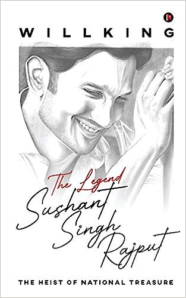
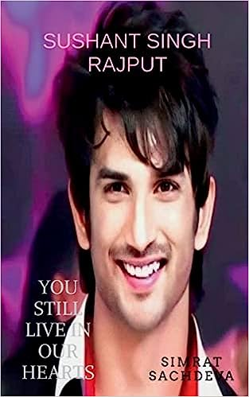

Sushant Singh Rajput
1986-2020
The SSR
The world lost you, but you still exist as an inspiration to those who dare to dream big. You exist in the hopes and aspirations of every small town guy who dreams of making it big some day. You exist for everyone who wants to believe that humans are capable of kindness. You exist for everyone who dares to dream. I never got to know you in this lifetime, but if we live more than once, I would want to be a part of the world again where you exist, a world that is much kinder than this one. Sushant Singh Rajput, you are missed.” Given the year that it has been for one and all, with death and despair looming on our country, the day of June 14 will always mark a dark one for everyone associated or connected to Sushant Singh Rajput or even not.
Biographies
-
The Legend, Sushant Singh Rajput : The Heist of National Treasure Paperback – 16 July 2020 
click here - SUSHANT SINGH RAJPUT : "You will live in our hearts forever". by Simrat Sachdeva Paperback click here